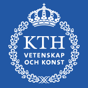

2022 – 2026 · Zurich, Switzerland 🇨🇭 / Tokyo, Japan 🇯🇵
We built Ace, the first autonomous robot to outplay professional table tennis players (Dürr et al., Nature, 2026).
I co-developed the perception system that lets Ace visually measure the spin of an unmodified ball during gameplay (Hu*, Schilling*, Cavinato* et al., ECCV, 2026; *equal contribution).
Event cameras capture the ball's rotation, while galvanometer-steered mirrors keep it centered in view and a liquid lens keeps it in focus.
Our spin estimator achieves offline errors of 1.2% in magnitude and 1.5° in axis, with real-time estimates staying within 8.8% and 6.4° of the offline results at 750 Hz with 3 ms of latency.

2017 – 2022 · Lausanne, Switzerland 🇨🇭
I developed the first drone swarm that flies in close formation using nothing but onboard cameras, with no radio link, no GPS, and no markers on the drones.
I approached the problem in two ways: designing modular perception and control pipelines (Schilling et al., RA-L, 2021) and training end-to-end control policies through imitation learning (Schilling et al., RA-L, 2019).
I studied how these swarms scale as more drones join and occlude each other (Schilling et al., IEEE Access, 2022).
Alongside this research, I supervised students and interns on projects including a simulated dataset for visual-inertial odometry in dynamic scenes, nominated for the Best Paper Award in Robot Vision at ICRA (Minoda, Schilling et al., RA-L, 2021).
I also taught Master-level courses on aerial robotics and motion capture systems as a teaching assistant.

2016 – 2017 · Stockholm, Sweden 🇸🇪
I taught a wheeled robot to read the ground in front of it, combining camera and lidar into a terrain classifier that transferred to environments it had never seen (Schilling et al., IROS, 2017).
The classifier ran inside the robot's navigation stack so it could route around terrain it could not cross.
2014 – 2017 · Stockholm, Sweden 🇸🇪
I specialized in autonomous systems: robotics, machine learning, and computer vision.
My thesis studied how batch normalization affects the training of deep convolutional neural networks (Schilling, M.Sc. thesis, 2016).
I also taught a Master-level AI course as a teaching assistant.
2012 – 2013 · Santa Barbara, California 🇺🇸
A self-organized year abroad, funded by two scholarships.
I took my first courses in computer vision and augmented reality here, and have been working on making machines see ever since.
B.Sc. in Computer Science · LMU Munich
2010 – 2014 · Munich, Germany 🇩🇪
I focused on mobile and distributed systems.
As a consultant with the junior enterprise Academy Consult, I led a project focused on public relations for TU Munich.
I also co-founded a startup designing websites and corporate identities for small businesses.